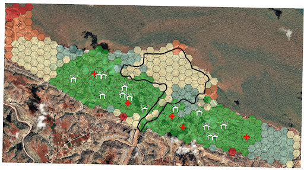

Methodology
3.3 Population Density Analysis
3.3.1 Deriving buildings with Derna City
At this stage, we need to analyse the building layer given and only select buildings that fall within the Derna city area.
Navigate to: Vector > Research Tools > Select by Location…
For the input fields
Select features from: gis_osm_buildings_a_free_1
Where the features (geometric predicate): intersect
By comparing to the features from: Derna_city_250m_hexagon
Advanced option:
- Invalid feature filtering: Do not Filter (Better Performance)
3.3_select_location
- Click “Run”
We will now save only the selected features within our study area for use.
Navigate to: Layers Sidebar > Right click “gis_osm_buildings_a_free_1” > Export > Save Selected Features As…
For the input fields
Format: GeoPackage
File name:
Name the file “Derna”
Save the file in “GeoPackage”
Layer Name: Buildings
CRS: EPSG:3197
Click on “Ok”
Remove “gis_osm_buildings_a_free_1” layer
3.3.2 Identifying residential/apartment buildings
At this stage, we need to identify the residential and apartment buildings in Derna as well as classify those buildings that are unclassified into the above-mentioned buildings based on area size.
Navigate to: Layers Sidebar > Right click “Derna - Buildings” > Open Attribute Table
From the Attribute Table:
Click on “Select features using an expression”
For the input fields:
- Expression box: “type” = ‘apartments’ or “type” = ‘residential’
Click on “Select Features”
Following the steps shown previously, save the selected features as a GeoPackage in the “Derna” GeoPackage and name it “Residential_Apartment_Buildings”.
Navigate to: Layers Sidebar > Right click “Residential_Apartment_Buildings” > Open Attribute Table
From the Attribute Table:
Click on “Open field calculator”

For the input fields:
Output field name: Area
Output field type: Decimal number (real)
Expression box: $area
- Click on “Ok”
Click on “Toggle edits”

- Save the changes made
- Save the changes made
- Take note of the “area” value of a apartment block, in this case, the building with fid of 4094
- Navigate to: Layers Sidebar > Right click “Derna - Buildings” > Open Attribute Table
- From the Attribute Table:
Click on “Select features using an expression”
For the input fields:
Expression box: $area <= 416.96021051961
Number is from the area of the residential area we found previously.
- Following the steps shown previously, save the selected features as a GeoPackage in the “Derna” GeoPackage and name it “population_buildings”.
- Remove “Derna — Residential_Apartment_Buildings” and “Derna — Buildings” layers.
3.3.3 Cleaning up the attribute table
We will now remove any unneeded fields for our analysis to keep the table tidy.
Right click the “population_buildings” layer and open its Attribute Table. Toggle editing mode by clicking the pencil icon in the top left of the attribute table window.
Once in editing mode, click the delete fields icon  .
.
In the dialog window, select “code” and “fclass”
Click OK to delete these fields
Click the pencil icon again to save the changes.
3.3.4 Converting building polygons into points
In this step, we will use the QGIS plugin realcentroid to convert the residential/apartment buildings into points that we will use in the next step.
Navigate to: Plugins > Manage and Install Plugins… > All > Search for “realcentroid” > Install Plugin
Navigate to: Vector > realcentroid > RealCentroid
For the input fields:
Polygon layer: QueryLayer
Output point on surface layer:
File name: population_buildings_points
File location: data.shp
Check the “Add to map canvas” box
3.3.5 Presenting the information in a choropleth map
Navigate to: Vector > Analysis Tools > Count Points in Polygon…
For the input fields:
Polygons: Derna_city_250m_hexagon
Points: population_buildings_points.shp
Click on “Run”
Following the steps shown previously, save the new layer as a GeoPackage in the “Derna ’’ GeoPackage and name it”population_density”.
Remove the “Count”, “population_buildings_points.shp” and “Derna - population_buildings” layers.
Now that we have the population_density field ready, we will use its values to create our choropleth map.
Navigate to: Layers Sidebar > Right Click “Derna - population_density”> Properties> Symbology
For the input fields:
Change “Single Symbol” to “Graduated”
Value: NUMPOINTS
Mode: Natural Break (Jenks)
Click on “OK”
3.3.6 Adding a backdrop
In this part, we will be adding a backdrop to the map, so that an aerial map of Derna city can be used to make the map easily associable.
Navigate to: Layers Sidebar > Right Click “Derna - population_density”> Properties> Symbology
For the input fields:
- Opacity: 60%
Using 01_07_23 as a backdrop should make the map look like this:
DEM Sites Map
3.4 Site Suitability of Evacuation Centres
Now we’ll create the map to assess site suitability of the identified potential evacuation sites (schools and universities).
3.4.1 Preparing the DEM layer
The DEM layer (n32_e022_1arc_v3) should be in your layers panel from the earlier steps.
Since the DEM covers a larger area of Northern Africa, we will clip the DEM to our study area.
Navigate to: Raster > Extraction > Clip Raster by Mask Layer…
For the input fields
Input layer: n32_e022_1arc_v3
Mask layer: Derna_city_250m_hexagon
Target CRS: EPSG:3197 LGD2006 / Libya ™ Zone 12
We will now save the temporary clipped layer to our geopackage.
Navigate to: Layers Sidebar > Right click “Clipped”
Go to: Export > Save Features As…
For the input fields
Format: GeoPackage
File name: navigate to your project folder and double click your geopackage
Layer Name: DEM_clipped
CRS: EPSG:3197
Click on “Ok”
Remove “n32_e022_1arc_v3” layer and the temporary “Clipped” layer
3.4.2 Determining the flood extent
In the step, we will cut out the extent of the flood that affects Derna City
Navigate: Vector > Geoprocessing Tools > Clip…
For the input fields
Input layer: PHR_20230913_FloodExtent_Derna
Overlay layer: Derna_city_250m_hexagon
Click on “Run”
Following the steps shown previously, save the new layer as a GeoPackage in the “Derna ’’ GeoPackage and name it”flood_extent”.
Remove the “PHR_20230913_FloodExtent_Derna” and “Clipped” layer.
Navigate: Layers Sidebar > Right click “flood_extent” > Properties > Symbology
Under “Fill” > Left click “Simple Fill”
Fill colour: “Transparent Fill”
Stroke Width: 1
o Click “OK”
Following the steps in 3.3.3, keep only the fields listed and remove all other fields:
- fid, Sensor_Dat, Area_m2, Area_ha, SHAPE_Leng, SHAPE_Area
3.4.3 Extracting statistics from flood extent for ranking
We will use the flood extent polygon to analyse the statistics of the flood elevation levels reached. We will use the native Zonal Statistics function for this.
Navigate to: “Processing” from the top menu bar > Toolbox
In the Processing Toolbox panel, search for “Zonal Statistics”
Double click on the Zonal Statistics function under Raster Analysis
For the input fields
Input layer: flood_extent
Raster layer: DEM_clipped
Under Statistics to calculate, click the three dots icon
- Select Mean, Median, Minimum, and Maximum
Click “OK”
Once you're ready, click "Run".
Following the steps from 3.4.1, save the temporary Zonal Statistics layer into your “Derna” GeoPackage and name it “flood_zonal_statistics”. Afterwards, remove the temporary Zonal Statistics layer.
We will quickly clean up the data table. Right click the “flood_zonal_statistics” layer and open its Attribute Table.
Following the steps in 3.3.3, keep only the fields listed and remove all other fields:
- fid, Sensor_Dat, _mean, _median, _min, _max
Observing the summary statistics, take note of the median, mean and max values.
3.4.4 Ranking the elevation levels by colour
We will now reflect the ranking of the elevation suitability using the summary statistics from the previous section.
Navigate to: Layers Sidebar > Right Click “DEM_clipped” > Properties > Symbology
For the input fields under Band Rendering:
Render type: Singleband pseudocolor
Edit the values as shown below:
Orange - Median
Yellow - Mean
Green - Max
- Gamma: 0.50
- Once ready, click “Apply”
In the Properties window, navigate to the Transparency tab
Set Global Opacity to 70%
Click “Apply”
3.4.5 Extracting Evacuation Centres as points
We will be using the Points of Interest (POIs) shapefile from the OSM data for Libya. First, we will clip the data to our study area of the hexagon map.
Navigate to: Vector > Research Tools > Select by Location…
For the input fields
Select features from: gis_osm_pois_a_free_1
Where the features (geometric predicate): intersect
By comparing to the features from: Derna_city_250m_hexagon
Under Advanced options:
- Set invalid feature filtering: Do not Filter (Better Performance)
Click “Run”
Following the steps shown previously, save the new layer as a GeoPackage in the “Derna ’’ GeoPackage and name it”POIS ’’.
Remove the “gis_osm_pois_a_free_1” layer.
Now, we will find the schools and universities in the Derna city area.
Navigate to: Layers Sidebar > Right click “Derna - POIS” > Open Attribute Table
From the Attribute Table:
Click on “Select features using an expression”
For the input fields:
- Expression box: “fclass” = ‘school’ or “fclass” = ‘university’
Click on “Select Features”
Following the steps shown previously, save the selected features as a GeoPackage in the “Derna” GeoPackage and name it “evacuation_centres”.
We will then convert the polygons layer into a point layer.
Following the steps shown previously in 3.3.4, convert the evacuation_centres polygons into points using realcentroid.
Save the resulting layer into the “Derna” GeoPackage and name it “evacuation_centres_points”.
Remove the “Centroids”, “Derna - evacuation_centres”, “Derna - POIS” and “gis_osm_pois_a_free_1” layers.
Following the steps in 3.3.3, keep only the fields listed and remove all other fields:
- id, osm_id, fclass, name
3.4.6 Separating the Viable and Non-viable Evacuation Centres
Referencing the colour-ranked DEM layer, we will separate the viable and non-viable sites from the “evacuation_centres_points” layer.
3.4.6.1 Extracting the Non-Viable Sites
We will select out the evacuation centres that fall within the higher risk areas of flooding (the red-yellow colours) based on visual reference.
Navigate to: Toolbar > Select Features by Polygon

Make sure the “evacuation_centres_points” layer is selected in the Layers Panel.
Draw a rough polygon that selects all the points that fall within red-coloured to yellow-coloured areas, using left mouse clicks to create the points of the polygon.
Right click to confirm the selection of features within the shape drawn.
Following the steps in 3.3.1, save the selected points into your geopackage as “Non-viable School Sites”.
- Rename the new layer in the Layers panel to remove the name of the geopackage for tidiness.
3.4.6.2 Adding the symbol for Non-viable Sites
To indicate that these initial sites are no longer considered, we will change the point symbol to a cross icon.
Navigate to: Layers Sidebar > Right Click “Non-viable School Sites” > Properties > Symbology
Under Marker, click Simple Marker
For input fields:
Symbol layer type: SVG Marker
SVG Image:
Size: 5.50 Millimetres
Rotation: 45º
Fill colour: Teal (HTML notation: #00ffde)
- Choose a colour that will stand out against the red-yellow colours of the DEM layer
Stroke colour: Black (HTML notation: #000000)
Stroke Width: 0.20 Millimetres
Feel free to change the colours as you wish
3.4.6.3 Extracting the Viable Sites
We will now select the remaining evacuation centres which should fall within the lower risk areas of flooding (the green-blue colours).
Navigate to: Toolbar > Select Features by Polygon
Make sure the “evacuation_centres_points” layer is selected in the Layers Panel.
Draw a rough polygon that selects all the remaining points, using left mouse clicks to create the points of the polygon.
Right click to confirm the selection of features within the shape drawn.
 Following the steps in 3.3.1, save the selected points into your geopackage as “Viable School Sites”.
Following the steps in 3.3.1, save the selected points into your geopackage as “Viable School Sites”.
- Rename the new layer in the Layers panel to remove the name of the geopackage for tidiness.
3.4.6.4 Adding the symbol for Viable Sites
To indicate that these sites are suitable evacuation centres, we will change the point symbol to a shelter icon.
Navigate to: Layers Sidebar > Right Click “Viable School Sites” > Properties > Symbology
Under Marker, click Simple Marker
For input fields:
Symbol layer type: SVG Marker
SVG Image:
Size: 8.00 Millimetres
Fill colour: White (HTML notation: #ffffff)
Stroke colour: Blue (HTML notation: #0006c0)
Stroke Width: 0.30 Millimetres
Under Offset, y: -2.0 Millimetres
Feel free to change the colours as you wish, but do ensure these icons visually distinct from the cross icons in colour
From the Layers panel, uncheck the “evacuation_centres_points” layer to hide its visibility. Your map should look something like this:
3.4.7 Adding the Satellite View Backdrop
We will be adding a backdrop to the map, so that an aerial map of Derna city can be used to make the map easily associable.
- Using 13_09_23_clipped as a backdrop should make the map look like this:
Accessibility Choropleth
3.5 Accessibility analysis
In this part, we will be analysing the accessibility of health facilities and evacuation centres in Derna city.
3.5.1 Clipping the Roads layer
In this step, we will clip the roads layer such that it only shows roads that are within the area of Derna city.
Navigate to: Vector > Geoprocessing Tools > Clip…
For the input fields
Input layer: Roads
Overlay layer: Derna_city_250m_hexagon
Click on "Run"
Following the steps shown previously, save the new layer as a GeoPackage in the "Derna ’’ GeoPackage and name it "roads".
Remove the "Roads" and "Clipped" layer.
3.5.2 Extracting Health Facilities as points
In this section, we will merge the health facility points and polygon layer together and show it as one point layer.
3.5.2.1 Removing points that fall within flooded area or are duplicated
Upon inspecting both "Health Facilities" polygon and point layer, we realised that some points are located at the same area. As such we need to remove one of them first before merging the two layers together.
Navigate to: Toolbar > Select Features by Polygon

Draw a rough polygon that selects all the health facility polygons that are within or near to the flooded areas, or overlap with the "Health Facilities" points layer.
Make sure the "Health Facilities" polygon layer is selected.
- Right click to confirm the selection of features within the shape drawn
Navigate to: Toolbar > Toggle Editing

Click on "Delete Selected"

Untoggle and save the edits
Repeat the above steps for the "Health Facilities" polygon layer, removing only the points that fall within the flood extent.
3.5.2.2 Cleaning up the data
In this step, we need to convert the "Health Facilities" Polygon layer into a point layer and at the same time keep points that are only within the hexagonal grid.
For the "Health Facilities" polygon layer:
Navigate to: Vector > Geometry Tools > Centroids…
For the input fields:
- Input layer: Health Facilities (Polygon Layer)
Click on "Run"
Navigate to: Vector > Research Tools > Select by Location…
For the input fields
Select features from: Centroids
Where the features (geometric predicate): intersect
By comparing to the features from: Derna_city_250m_hexagon
Advanced option:
- Invalid feature filtering: Do not Filter (Better Performance)
- Click "Run"
Following the steps shown previously, save the selected features as a GeoPackage in the "Derna ’’ GeoPackage and name it "HF_polygons".
Remove the "Centroids" and "Health Facilities" polygon layers.
For the "Health Facilities" points:
Navigate to: Vector > Research Tools > Select by Location…
For the input fields
Select features from: Health Facilities (Point Layer)
Where the features (geometric predicate): intersect
By comparing to the features from: Derna_city_250m_hexagon
Advanced option:
- Invalid feature filtering: Do not Filter (Better Performance)
- Click "Run"
Following the steps shown previously, save the selected features as a GeoPackage in the "Derna ’’ GeoPackage and name it "HF_points".
Remove the "Health Facilities" point layer.
3.5.2.3 Merging both "HF" layers together
In this step, we need to merge both "HF" layers together so that it can be used later for the accessibility analysis.
Navigate to: Vector > Geoprocessing Tools > Union…
For the input fields
Input layer: Derna - HF_points
Overlay layer: Derna - HF_polygons
Click on "Run"
Following the steps shown previously, save the new layer as a GeoPackage in the "Derna ’’ GeoPackage and name it "HF_combined ’’. (Note: Uncheck the "persist layer metadata" and the "Include z-dimension" boxes, change the Geometry type to "Point" as well)
Remove the "Union", "Derna - HF_polygons" and "Derna - HF_points" layers.
3.5.3 Getting hexagonal layer centroid
In this step, we need to get the centre of each hexagonal piece of the Derna city layer so that it can be used to create the accessibility choropleth in the following steps.
Navigate to: Vector > Geometry Tools > Centroids…
For the input fields:
- Input layer: Derna_city_250m_hexagon
Click on "Run"
Following the steps shown previously, save the new layer as a GeoPackage in the "Derna ’’ GeoPackage and name it "city_centroid".
Remove the "Centroids" layer.
3.5.4 Displaying information on separate choropleth maps
In this step, we will use the road network, the health facilities and the evacuation centres layers to create 2 separate choropleth maps to show the accessibility of health facilities and evacuation centres in relation to each individual hexagonal square in Derna city. We will also be using the plugin Qneat.
Using the "HF_combined" layer as a example:
Navigate to: Plugins > Manage and Install Plugins… > All > Search for "QNEAT3" > Install Plugin
Navigate to: Processing > Toolbox > Search … > OD Matrix Layers as Table (m:n)
Choose "OD Matrix Layers as Table (m:n)" under "QNEAT3"
For the input fields:
Network layer: Derna - roads
From-Point Layer: Derna - city_centroids
Unique Point ID Field: fid
To-Point Layer: Derna - HF_combined
Unique Point ID Field: fid
Optimisation Criterion: Shortest Path
Entry Cost calculation method: Ellipsoidal
Topology Tolerance: 0.5
Rest of the fields leave it as it is
- Click on "Run"
Following the steps shown previously, save the matrix as a GeoPackage in the "Derna ’’ GeoPackage and name it "OD_Matrix_HF ’’.
Remove the "Output_OD_Matrix" layer.
Navigate to: Database > DB Manager…>Virtual Layers> Project Layers> trips_data> SQL Window
In the query box input:
select origin_id, destination_id, min(total_cost) as shortest_distancefrom od_matrix_HF group by origin_id
Click on "Execute"
Tick the "Load as new layer" box
Click on "Load"
Following the steps shown previously, save the matrix as a GeoPackage in the "Derna ’’ GeoPackage and name it "acc_HF ’’.
Following the steps shown previously, save a copy of "Derna_city_250m_hexagon ’’ as a GeoPackage in the "Derna ’’ GeoPackage and name it "acc_HF_choropleth ’’.
Remove the "OD_Matrix_HF" and "QueryLayer" layer.
Navigate to: Layers Sidebar > Right Click "Derna - acc_HF_choropleth"> Properties> Join
Click the "+" icon

For the input fields
Join layer: Derna - city_centroid
Join field: fid
Target field: fid
Rest of the fields leave it
Click "Ok"
Click "Apply"
Navigate to: Layers Sidebar > Right click "Derna - acc_HF" > Open Attribute Table
From the Attribute Table:
Click on "Open field calculator"

For the input fields:
Output field name: distance_real
Output field type: Decimal number (real)
Expression box: to_real( “shortest_distance” )
-
- Click on "Ok"
Manually change null values to 11000
Click on "Toggle edits"

- Save the changes made
Navigate to: Layers Sidebar > Right Click "Derna - acc_HF_choropleth"> Properties> Symbology
For the input fields:
Change "Single Symbol" to "Graduated"
Value: Derna - acc_HF_distance_real
Mode: Natural Break (Jenks)
Classes: 3
-
Click on "Ok"
Take note of the values for each interval.
Repeat all the steps in step 3.5.4 with the "Derna - evacuation_centre_points" layer, naming the layers appropriately and changing null values to 5000.
The values of each interval for the evacuation centres should give these values.
3.5.5 Displaying information on a single map
In this part, we will merge both choropleth maps into a single map. This single choropleth map will take into account accessibility of both health facilities as well as evacuation centres.
3.5.5.1 Categorising Accessibility
In this step, we will categorise the accessibility of health facilities and evacuation centres into 3 distinct categories: Low, Moderate and High.
For Evacuation Centres:
Navigate to: Layers Sidebar > Right click "Derna - acc_EC" > Open Attribute Table
From the Attribute Table:
Click on "Open field calculator"
For the input fields:
Output field name: category
Output field type: Text (string)
Expression box:
Casewhen "distance_real" <= 1456 then 'High'when "distance_real" <= 3014.30 then 'Moderate'when "distance_real" <= 5000 then 'Low'End
- Click "Ok"
Click on "Toggle edits"
- Save the changes made
For Health Facilities:
Navigate to: Layers Sidebar > Right click "Derna - acc_HF" > Open Attribute Table
From the Attribute Table:
Click on "Open field calculator"
For the input fields:
Output field name: category
Output field type: Text (string)
Expression box:
Casewhen "distance_real" <= 1863 then 'High'when "distance_real" <= 4416 then 'Moderate'when "distance_real" <= 11000 then 'Low'End
- Click "Ok"
Click on "Toggle edits"
- Save the changes made
3.5.5.2 Accessibility on a choropleth map
In this step, we will join all 3 tables together to make one single choropleth map.
Following the steps shown previously, save a copy of "Derna_city_250m_hexagon ’’ as a GeoPackage in the "Derna ’’ GeoPackage and name it "acc_combined_choropleth ’’.
Navigate to: Layers Sidebar > Right Click "Derna - acc_combined_choropleth"> Properties> Join
Click the "+" icon
For the input fields
Join layer: Derna - acc_EC
Join field: fid
Target field: fid
Rest of the fields leave it
Click the "+" icon
For the input fields
Join layer: Derna - acc_HF
Join field: fid
Target field: fid
Rest of the fields leave it
Navigate to: Layers Sidebar > Right click "Derna - acc_combined_choropleth" > Open Attribute Table
From the Attribute Table:
Click on "Open field calculator"
For the input fields:
Output field name: combined_acc
Output field type: Text (string)
Expression box: “Derna — acc_HF_category” || “Derna — acc_EC_category”
- Click "Ok"
Click on "Toggle edits"
Save the changes made
Navigate to: Layers Sidebar > Right Click "Derna - acc_HF_choropleth"> Properties> Symbology
For the input fields:
Change "Single Symbol" to "Categorized"
Value: combined_acc
Change the rest of fields so it looks similar to the one referenced below:
Click on "Apply"
The map should look like this:
3.5.6 Adding evacuation centres and health facilities symbols
In this part, we will add back the health facilities and evacuation centres as symbols to the map.
Using Evacuation Centres as an example:
Navigate to: Layers Sidebar > Right Click "Derna - evacuation_centre_points" > Properties > Symbology
Marker >Simple Marker
Input Fields:
Symbol layer type: SVG Marker
SVG Image:
Size: 8
Colour: White
Stroke Width: 0.2
The map should now look like this:

Repeat the same step for health facilities using the symbol
- The map should look like this:
3.5.7 Adding a backdrop
In this part, we will be adding a backdrop to the map, so that an aerial map of Derna city can be used to make the map easily associable.
Navigate to: Layers Sidebar > Right Click "Derna - acc_combined_choropleth"> Properties> Symbology
For the input fields:
- Opacity: 60%
Using 13_09_23 as a backdrop should make the map look like this:
